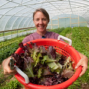
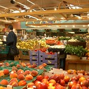

Eating organic food
Organic foods often have more beneficial nutrients, such as antioxidants, than their conventionally-grown counterparts and people with allergies to foods, chemicals, or preservatives may find their symptoms lessen or go away when they eat only organic foods. Organic produce contains fewer pesticides.
Organic products reduce public health risks to farm workers, their families, and consumers by minimizing their exposure to toxic and persistent chemicals on the farm and in food, the soil in which they work and play, the air they breathe, and the water they drink. Children are especially vulnerable to pesticides. Thus, offering organic food and fiber products into the marketplace gives parents the option of choosing products produced without the use of these toxins.


" Lakes State Park square" by vastateparksstaff is licensed under CC BY 2.0 
 .
.
Not only does organic production help reduce public health risks, mounting evidence shows that food grown organically are rich in nutrients, such as Vitamin C, iron, magnesium, and phosphorus, with less exposure to nitrates and pesticide residues in organically grown fruits, vegetables, and grains when compared to conventionally grown products.
While proving health benefits of eating a particular food is a complex question to answer, evidence is mounting that there are some healthier nutritional profiles linked to consuming various organic products. For instance, a research article published in December 2013 in PLOS ONE found that organic whole milk contained significantly higher concentrations of heart-healthy omega-3 fatty acids compared to milk from cows raised on conventionally managed dairy farms. Meanwhile, a research article published in the journal Food Chemistry found organic soybeans have a healthier nutritional profile from conventionally grown or genetically modified Roundup Ready soybeans.